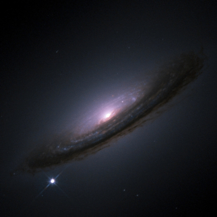

Research
My research focuses on using Type Ia supernova to make various cosmological measurements and how we can improve them.
-

Type Ia Supernovae
Type Ia Supernovae (SNIa) are Carbon/Oxygen white dwarf stars that have experienced a thermonuclear explosion. These celestial fireworks are incredibily bright, often outshining their host galaxy, and because of this, we can see them from very far away. In a useful quirk of nature, each explosion is very similar and it is possible to standardize them to a set luminosity and thus, very precise distances can be calculated. SNIa have been used to great effect in the astronomical community, most famously winning the Nobel Prize in 2011 for discovering the acceleration of the expansion of the Universe.
-
Recent advances in robotic telescopes has allowed all-sky surveys to identify hundreds of nearby supernovae each year. Using the Pan-STARRS telescope, the Foundation team has observed a few hundred of these objects on a single photometric system, effectively reducing both the systematic and statistical uncertainty of the low-z Hubble Diagram. My main contributions to this collaboration was collecting and organizing spectral data and determining the redshift to galaxies which were previoulsy unknown.
-
SNIa Velocities
Multiple measurable quantities are used to standardize the lightcurves of SNIa, but almost all of these are based on photometry. I look into other possible correlations that use the spectrum of the supernova. Specifically, based on the previous works of Wang et al. 2009 and Foley et al. 2011, I look at how the intrinsic color of supernovae is affected by its velocity. My results in this field will be published soon.